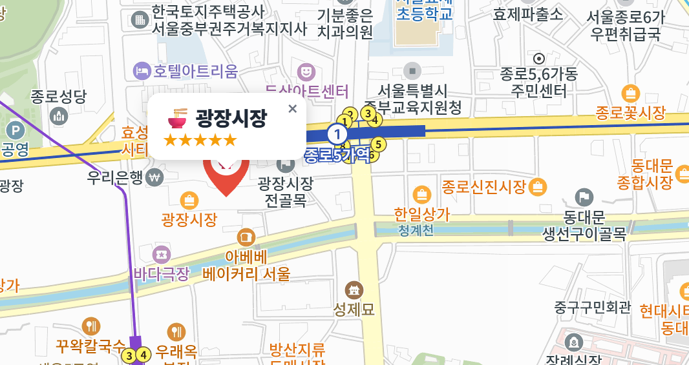
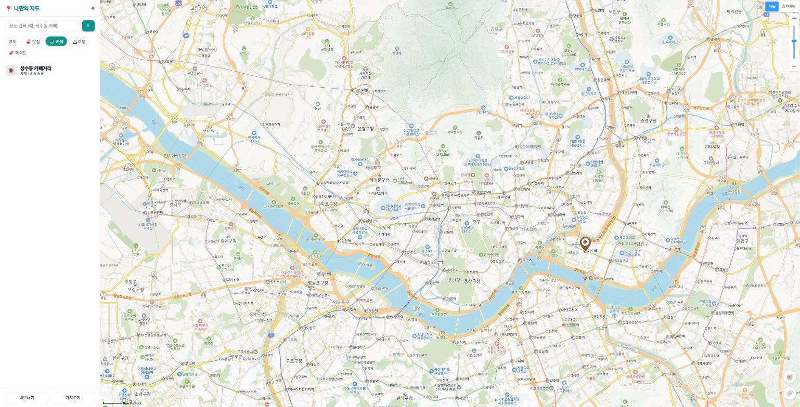
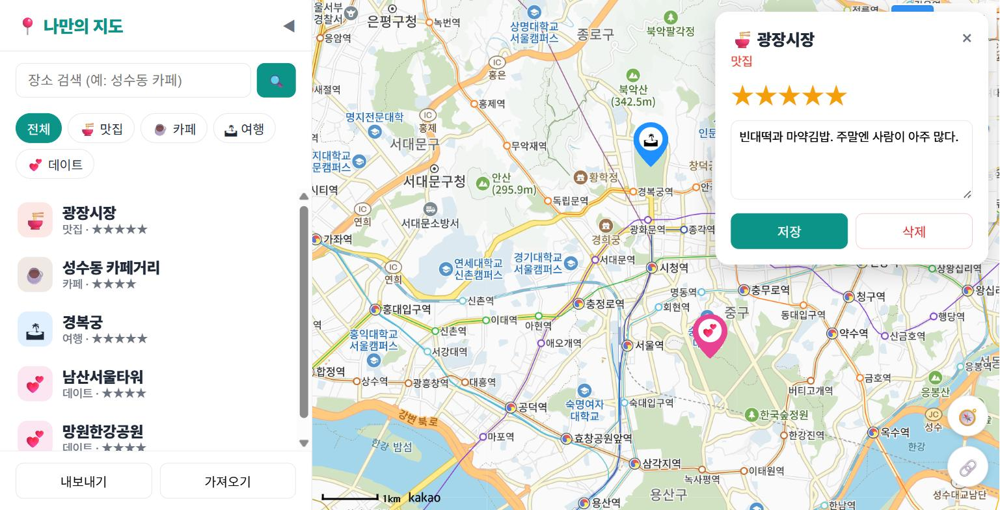
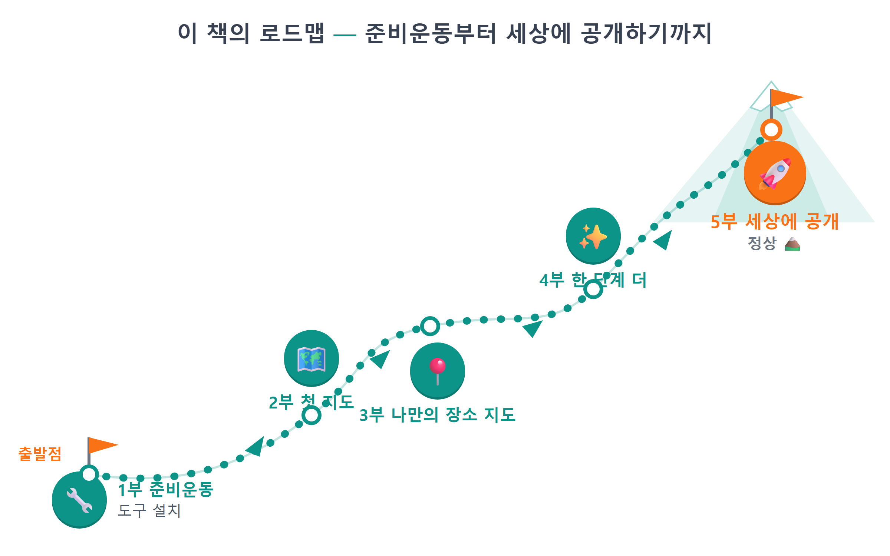

0장 이 책에서 만드는 것¶
이 장에서 배우는 것
- 이 책에서 완성할 「나만의 지도」 웹앱이 어떤 모습인지 미리 살펴봅니다
- "바이브코딩"이 무엇이고, 왜 코드를 몰라도 앱을 만들 수 있는지 이해합니다
- 시작 전에 준비할 것 세 가지(윈도우 PC, 카카오 계정, Claude Pro 또는 무료 대안 에이전트)를 확인합니다
- 5부 26장으로 이어지는 책 전체의 여정을 한눈에 파악합니다
0.1 완성된 모습부터 보여드립니다¶
무언가를 만들기 전에, 완성된 모습을 먼저 보는 것이 좋습니다. 목적지를 알고 떠나는 여행과 모르고 떠나는 여행은 완전히 다르니까요. 그래서 이 책의 첫 장은 설치도, 설정도, 코드도 아닙니다. 여러분이 마지막 장을 덮을 때 손에 쥐게 될 결과물을 먼저 구경하는 시간입니다.
이 책에서 우리는 「나만의 지도」라는 웹앱을 만듭니다. 카카오지도 위에 내가 좋아하는 맛집, 카페, 여행지, 데이트 코스를 직접 핀으로 꽂아 관리하는 나만의 지도 서비스입니다. 아래가 완성된 화면입니다.

그림 0.1 — 완성된 「나만의 지도」 전체 화면
화면 구성은 단순합니다. 왼쪽에는 사이드바가 있습니다. 검색창, 카테고리 필터 버튼, 그리고 내가 저장한 장소 목록이 위에서 아래로 배치되어 있습니다. 오른쪽에는 지도가 화면을 꽉 채웁니다. 지도 위에는 카테고리별로 색이 다른 마커들이 꽂혀 있습니다. 🍜 맛집은 주황색, ☕ 카페는 갈색, 🏝 여행은 파란색, 💕 데이트는 분홍색. 한눈에 "아, 이 동네에 내가 찜한 카페가 몰려 있구나"가 보입니다.
단순해 보이지만, 이 앱에는 실제 지도 서비스가 갖춰야 할 기능이 알차게 들어 있습니다. 하나씩 투어를 돌아보겠습니다.
마커를 누르면 말풍선이 뜹니다¶
지도 위의 마커를 클릭하면 예쁜 말풍선이 나타납니다. 장소 이름, 카테고리, 별점이 담겨 있습니다. 카카오지도가 기본으로 주는 밋밋한 인포윈도우가 아니라, 우리가 HTML과 CSS로 직접 디자인한 커스텀 말풍선입니다. 꼬리 모양까지 CSS로 그려 넣습니다.

그림 0.2 — 마커 클릭 시 나타나는 커스텀 말풍선
버튼 하나로 원하는 것만 골라 봅니다¶
사이드바의 필터 버튼을 누르면 지도가 반응합니다. "☕ 카페"를 누르면 지도에서 카페 마커만 남고 나머지는 사라집니다. "전체"를 누르면 다시 모든 마커가 돌아옵니다. 데이트 코스를 짜는 날에는 💕 버튼만, 점심 메뉴를 고를 때는 🍜 버튼만. 지도가 그날의 목적에 맞춰 변신합니다.

그림 0.3 — 카테고리 필터로 카페만 표시한 화면
전국 어디든 검색해서 추가합니다¶
검색창에 "성수동 카페"라고 치면 카카오의 장소 데이터베이스에서 실제 가게들을 찾아 목록으로 보여줍니다. 결과를 클릭하면 지도가 그곳으로 부드럽게 이동하고, ＋ 버튼을 누르면 내 지도에 바로 저장됩니다. 지도의 빈 곳을 클릭해서 직접 추가할 수도 있습니다. "여기가 우리가 처음 만난 곳" 같은, 검색으로는 안 나오는 나만의 장소도 핀으로 남길 수 있다는 뜻입니다.

그림 0.4 — 키워드 검색 결과와 장소 추가 버튼
별점과 메모까지, 나만의 기록이 쌓입니다¶
저장한 장소를 클릭하면 상세 패널이 열립니다. 여기서 별점을 1점부터 5점까지 매기고, "웨이팅 김, 평일 오픈런 추천" 같은 메모를 남길 수 있습니다. 필요 없어진 장소는 삭제 버튼으로 정리합니다. 이렇게 쌓인 기록은 브라우저에 저장되어 내일 다시 열어도 그대로 남아 있고, 파일로 내보내 백업할 수도 있습니다.

그림 0.5 — 별점과 메모를 편집하는 상세 패널
여기까지가 핵심 기능이고, 뒷부분에서는 한 걸음 더 나아갑니다. 🧭 버튼을 누르면 내 현재 위치가 파란 점으로 표시됩니다. 🔗 버튼을 누르면 지금 보고 있는 지도 위치가 링크로 복사되어 친구에게 "여기서 보자"라고 보낼 수 있습니다. 장소가 100개로 불어나도 마커가 자동으로 뭉쳐지는 클러스터 기능, 스마트폰에서도 쓰기 편한 모바일 화면까지 만듭니다. 그리고 마지막에는 이 모든 것을 인터넷에 배포해서, 전 세계 어디서든 주소만 치면 열리는 진짜 웹 서비스로 완성합니다.
💡 팁
지금 소개한 기능 이름들 — 마커, 커스텀 오버레이, 필터, localStorage, 클러스터러 — 을 외울 필요는 전혀 없습니다. 각 기능마다 한 장씩 배정되어 있어서, 그 장에 도착하면 충분히 천천히 만나게 됩니다. 지금은 "이런 게 만들어지는구나" 하고 구경만 하셔도 됩니다.
0.2 그런데, 코드는 누가 짜나요?¶
여기서 자연스러운 질문이 나옵니다. "이걸 내가 만든다고요? 저는 코딩을 못하는데요."
좋은 소식입니다. 이 책에서 코드를 짜는 것은 여러분이 아닙니다. AI가 짭니다. 여러분이 하는 일은 AI에게 한국어로 시키는 것입니다. 이런 식으로요.
🗣 이렇게 시키세요
지도를 화면 전체에 꽉 차게 띄워줘. 카카오지도 JS SDK를 쓰고, 키는 .env에서 읽어줘.
이렇게 말하면 Claude Code라는 AI 도구가 필요한 파일을 만들고, 코드를 작성하고, 실행까지 해 줍니다. 우리는 결과를 브라우저에서 확인하고, 마음에 안 들면 다시 말로 고칩니다. "말풍선이 너무 작아. 글자를 키우고 그림자를 넣어줘." 이런 식의 대화가 곧 개발 과정입니다.
이런 방식의 개발을 바이브코딩(vibe coding)1이라고 부릅니다. 키보드로 코드를 한 줄 한 줄 타이핑하는 대신, 만들고 싶은 것을 말로 설명하고 AI가 작성한 코드를 함께 읽으며 다듬어 가는 방식입니다. 이 책에는 복사-붙여넣기가 없습니다. 대신 매 실습마다 "이렇게 시키세요" 프롬프트 박스가 등장합니다. 여러분은 그 프롬프트를 참고해 AI에게 일을 시키고, AI가 만들어 온 코드를 책과 함께 한 줄씩 읽으며 이해합니다. 바이브코딩이 왜 지금 가능해졌는지, 실제로 어떤 원리로 굴러가는지 — 자세한 작동 원리는 1장에서 본격적으로 파헤칩니다. 이 절에서는 큰 그림만 잡고 가면 충분합니다.
그림 0.6 — 바이브코딩의 흐름: 말하기 → AI가 코드 작성 → 함께 읽기 → 확인하기
"그럼 코드는 안 배워도 되나요?"라고 물으신다면, 절반만 맞습니다. 타이핑은 AI가 하지만, 읽기는 우리가 합니다. AI가 만든 코드가 무슨 일을 하는지 대략이라도 알아야 "여기가 이상한데?"라고 지적할 수 있고, 원하는 방향으로 고쳐 달라고 시킬 수 있기 때문입니다. 운전에 비유하면, 엔진을 조립할 줄은 몰라도 계기판은 읽을 줄 알아야 하는 것과 같습니다. 이 책의 코드 해설은 정확히 그 수준 — 계기판을 읽는 수준 — 을 목표로 합니다. 외우라고 하지 않습니다. 이해하고 넘어가면 충분합니다.
그리고 한 가지 약속드릴 것이 있습니다. 이 책의 앱은 실제로 이 책이 안내하는 방식 그대로, 저자가 Claude Code에게 시켜서 만든 앱입니다. 여러분이 보게 될 코드는 AI가 작성하고 사람이 검토한, 바이브코딩의 실제 결과물입니다. "이론상 된다"가 아니라 "이렇게 해서 만들었다"를 담았습니다.
⚠️ 주의
바이브코딩이 "아무것도 몰라도 된다"는 뜻은 아닙니다. AI는 가끔 틀립니다. 엉뚱한 코드를 만들기도 하고, 시킨 것과 다른 일을 하기도 합니다. 그래서 이 책은 AI에게 작게 시키고, 결과를 확인하고, 잘못되면 되돌리는 습관을 처음부터 함께 훈련합니다. 이 세 가지 습관이 바이브코딩의 안전벨트입니다. 1장에서 자세히 다룹니다.
0.3 준비물 세 가지¶
이 책을 따라가는 데 필요한 준비물은 딱 세 가지입니다.
첫째, 윈도우 PC입니다. 이 책의 모든 스크린샷과 설치 과정은 윈도우 10/11 기준으로 안내합니다. 고사양일 필요는 없습니다. 인터넷이 되고 크롬 브라우저가 돌아가는 PC면 충분합니다. 맥을 쓰시는 분도 따라올 수는 있지만, 설치 화면이 책과 조금 다르게 보일 수 있습니다.
둘째, 카카오 계정입니다. 카카오톡을 쓰고 계시다면 이미 있습니다. 우리가 쓸 지도는 카카오에서 제공하는 카카오지도 API2인데, 이걸 쓰려면 카카오 개발자 사이트에서 열쇠(API 키)를 발급받아야 합니다. 발급은 무료이고, 이 책에서 쓰는 범위에서는 요금이 나오지 않습니다. 발급 과정은 7장에서 화면을 하나하나 따라가며 안내합니다.
셋째, Claude Pro 구독(또는 무료 대안 에이전트)입니다. 우리 대신 코드를 짜 줄 AI, Claude Code를 쓰기 위한 구독입니다. 월 구독제(약 $20)라서 부담이 없지는 않습니다만, 이 책의 주인공 도구인 만큼 한 달만이라도 구독해서 따라가 보시기를 권합니다. 책 한 권을 완주하는 데는 한 달이면 충분합니다. 당장 구독이 어렵다면 opencode, codex 같은 무료 대안 에이전트로도 책을 따라올 수 있는데, 이 도구들은 4장에서 소개합니다.
💡 팁
당장 구독이 부담스럽다면 무료 대안도 있습니다. 4장에서 opencode 등 무료로 쓸 수 있는 비슷한 도구들을 박스로 소개합니다. 프롬프트로 시키고 결과를 확인하는 흐름은 어느 도구든 같아서, 책의 내용은 그대로 따라올 수 있습니다.
아, 그리고 목차에서 말씀드린 준비물이 하나 더 있습니다. 바로 호기심입니다. 다행히 이것은 발급 절차도, 구독료도 없습니다.
혹시 "프로그래밍 경험"이 준비물 목록에 없는 것을 눈치채셨나요? 맞습니다. 없어도 됩니다. 변수가 뭔지, 함수가 뭔지 몰라도 시작할 수 있습니다. 필요한 개념은 필요해지는 순간에, 필요한 만큼만 설명합니다.
0.4 책의 지도: 5부로 떠나는 여정¶
지도 앱을 만드는 책답게, 책 자체의 지도도 그려 드리겠습니다. 이 책은 5부, 26개 장으로 구성되어 있습니다.

그림 0.7 — 이 책의 로드맵: 준비운동부터 세상에 공개하기까지
1부 「바이브코딩 준비운동」(1~6장)에서는 도구를 갖춥니다. 바이브코딩이 왜 지금 배울 만한 방식인지 이야기한 뒤, Node.js, Git, Claude Code, GitHub CLI, 그리고 여러 AI 에이전트를 지휘하는 Orca까지 — 저자가 실제로 매일 쓰는 도구 다섯 가지를 순서대로 설치하고 길들입니다. 설치가 지루하게 느껴질 수 있지만, 여기서 갖춘 도구들이 책 끝까지 함께 갑니다.
2부 「카카오 지도 첫걸음」(7~10장)에서 드디어 지도를 띄웁니다. 카카오 개발자 계정을 만들어 API 키를 발급받고, Vite로 프로젝트를 시작하고, 브라우저 화면 가득 지도가 뜨는 순간을 맞이합니다. 지도를 움직이고 확대하는 기본기까지 익힙니다. 아마 이 책에서 가장 짜릿한 순간 중 하나가 9장에 있을 겁니다. 내 손으로(정확히는 내 말로) 띄운 첫 지도니까요.
3부 「나만의 장소 지도 만들기」(11~19장)가 이 책의 심장입니다. 마커를 찍고, 장소 데이터를 설계하고, 말풍선을 달고, 필터와 검색을 붙이고, 클릭으로 장소를 추가하고, 새로고침해도 사라지지 않게 저장하고, 목록과 상세 패널로 관리합니다. 3부가 끝나면 그림 0.1의 화면이 여러분의 브라우저 안에 있습니다.
4부 「한 단계 더」(20~23장)에서는 앱을 한층 업그레이드합니다. 내 위치 표시, 링크로 지도 공유, 마커 100개도 거뜬한 클러스터러, 스마트폰 대응까지. "있으면 좋겠다" 싶었던 기능들이 하나씩 붙습니다.
5부 「세상에 공개하기」(24~26장)는 완성한 앱을 GitHub에 올리고, GitHub Pages로 배포해서 진짜 인터넷 주소를 얻는 과정입니다. 친구에게 링크를 보내 "이거 내가 만들었어"라고 자랑하는 순간이 이 책의 결승선입니다.
부록도 두 개 있습니다. 부록 A는 책에 나온 프롬프트를 상황별로 모은 템플릿 모음, 부록 B는 "지도가 회색으로 나와요" 같은 단골 문제의 해결법을 정리한 트러블슈팅 표입니다. 막힐 때마다 펼쳐 보세요.
💡 팁
책은 순서대로 읽도록 설계되어 있지만, 이미 갖춘 도구가 있다면 해당 장은 건너뛰어도 됩니다. 예를 들어 Node.js와 Git이 이미 설치되어 있다면 2~3장은 버전 확인만 하고 넘어가면 됩니다. 다만 7장(카카오 키 발급)과 8장(프로젝트 시작)은 모두가 거쳐야 하는 관문입니다.
0.5 마무리¶
📌 핵심 요약
- 이 책의 목표는 카카오지도 기반 「나만의 지도」 웹앱을 완성해 인터넷에 배포하는 것입니다.
- 완성 앱에는 마커·말풍선·카테고리 필터·검색·장소 추가·저장·상세 패널·위치·공유·클러스터·모바일 대응이 들어갑니다.
- 코드는 AI(Claude Code)가 짜고, 우리는 말로 시키고 결과를 읽고 확인합니다 — 이것이 바이브코딩입니다.
- 준비물은 윈도우 PC, 카카오 계정, Claude Pro(또는 무료 대안 에이전트) 세 가지이며 프로그래밍 경험은 필요 없습니다.
- 책은 5부 26장 구성입니다: 도구 준비 → 첫 지도 → 나만의 지도 → 업그레이드 → 세상에 공개.
🤔 생각해보기
Q1. 여러분만의 지도에 담고 싶은 장소는 어떤 것들인가요? 카테고리(맛집/카페/여행/데이트)별로 떠오르는 장소를 두세 곳씩 적어 보세요. 책을 따라가는 동안 이 장소들이 실제 데이터가 됩니다.
✍️ ________
✍️ ________
Q2. "코드를 직접 타이핑하는 대신 AI에게 말로 시킨다"는 방식에 대해 기대되는 점과 걱정되는 점을 하나씩 적어 보세요.
✍️ ________
✍️ ________
✏️ 연습 문제
- 그림 0.1의 완성 화면에서 찾을 수 있는 기능을 다섯 가지 이상 말해 보세요.
- 이 책의 준비물 세 가지는 무엇인가요? 그중 지금 내가 이미 갖춘 것과 새로 준비해야 할 것을 구분해 보세요.
- 3부가 끝났을 때와 5부가 끝났을 때, 내 앱은 각각 어떤 상태일까요? 한 문장씩 설명해 보세요.
🔎 더 찾아보기
카카오맵— 우리가 만들 앱의 바탕이 되는 지도 서비스. map.kakao.com에서 완성형 서비스를 미리 구경해 보세요.구글 마이맵(My Maps)— 구글이 제공하는 "나만의 지도" 서비스. 우리가 만들 앱과 비슷한 개념이라 비교해 보면 재미있습니다.PWA(프로그레시브 웹앱)— 웹앱을 스마트폰 홈 화면에 설치해 앱처럼 쓰는 기술. 이 책 이후의 확장 아이디어입니다.
다음 장 예고 — 다음 장에서는 이 책의 개발 방식인 바이브코딩을 본격적으로 파헤칩니다. 왜 지금이 "코드를 몰라도 만드는 시대"인지, 저자가 실제로 Claude Code와 Orca를 어떻게 조합해서 쓰는지, 그리고 AI에게 일을 시킬 때 꼭 지켜야 할 세 가지 습관 — 작게 시키기, 확인하기, 되돌리기 — 를 배웁니다.